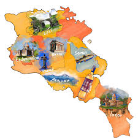

Հայաստանը, պաշտոնապես Հայաստանի Հանրապետու
թյունը, դեպի ծով ելք չունեցող երկիր է, որը գտնվում է Արևմտյան Ասիայի Հայկական լեռնաշխարհում։ Մտնում է Կովկասյան տարածաշրջանի կազմի մեջ; և արևմուտքում սահմանակից է Թուրքիային, հյուսիսից՝ Վրաստանին, Լաչինի միջանցքին ռուսական խաղաղապահ ուժերի ներքո, և Ադրբեջանին արևելքից, իսկ Իրանին և ադրբեջանական Նախիջևանի էքսկլավին հարավից։ Երևանը մայրաքաղաքն է և ամենամեծ քաղաքը։

Զինանշան
Հայաստանի զինանշանի մասին օրենքն ընդունվել է Հայաստանի Գերագույն խորհրդի կողմից 1992 թվականի ապրիլի 19-ին, վերականգնվել է Հայաստանի առաջին Հանրապետության (1918-1920 թթ.) զինանշանը, որի հեղինակներն են ճարտարապետ, ակադեմիկոս. Ռուսաստանի գեղարվեստի ակադեմիա Ալեքսանդր Թամանյան, գեղանկարիչ Հակոբ Կոջոյան
Խոր Վիրապ
Խոր Վիրապ, Խոր Վիրապի վանք, ճարտարապետական հուշարձան, 17-րդ դարի վանք-ամրոց Մեծ Հայքի Այրարատ նահանգի Ոստան Հայոց գավառում, Արաքս գետի ձախ կողմում, Լուսառատ գյուղի մոտ, պատմական Արտաշատ քաղաքի բլուրներից մեկի վրա ( այժմ Արարատի մարզի Լուսառատ գյուղից մոտ 1 կմ հեռավորության վրա) հյուսիս-արևմուտք)։ Գրիգոր Լուսավորչի անվան հետ կապված հայկական նշանավոր ուխտատեղիներից էր։
Գառնու հեթանոսական տաճար
Գառնու հեթանոսական տաճար, հին հայկական արևապաշտական տաճար Կոտայքի մարզի Գառնի գյուղում, Ազատ գետի աջ ափին։ Հայաստանի պատմության և մշակույթի անշարժ հուշարձան է:
Ելնելով ավանդություններից՝ Մովսես Խորենացին Գառնու հիմնադրումը վերագրում է Հայկ նահապետի ծոռ Գեղամին, որի թոռան՝ Գառնիկի անունով էլ, իբրև, կոչվել է Գառնի։